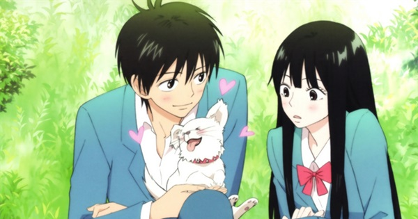
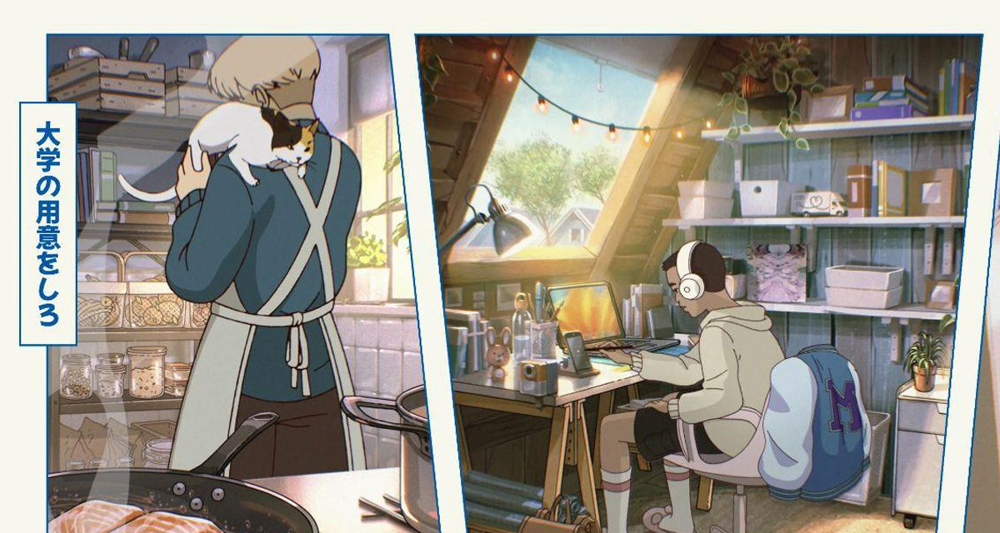

Action / Adventure
Focuses on movement, conflict, growth, and escalating stakes. These stories often have energetic pacing and memorable rivalries.
Examples: One Piece, Hunter x Hunter
Discover anime and manga with clearer recommendations, genre guides, and beginner-friendly direction.
Genres help users understand what kind of emotional and storytelling experience a title is likely to offer. This page gives a clearer breakdown of popular anime and manga categories.
Focuses on movement, conflict, growth, and escalating stakes. These stories often have energetic pacing and memorable rivalries.
Examples: One Piece, Hunter x Hunter

Built around emotional development, chemistry, vulnerability, and character relationships. Some are lighthearted, while others lean dramatic.
Examples: Horimiya, Your Lie in April

These stories are driven by tension, hidden information, suspense, and the need to understand what is really happening.
Examples: Death Note, Monster

Fantasy uses imagined worlds, magical systems, supernatural forces, and broader mythic or adventure-driven storytelling.
Examples: Fullmetal Alchemist, Frieren

More grounded and atmosphere-driven, often focusing on daily routines, smaller emotional moments, and character interaction.
Examples: Barakamon, March Comes in Like a Lion

Centers on improvement, rivalry, teamwork, and personal growth. These are often very motivating and accessible for new viewers.
Examples: Haikyuu!!, Blue Lock